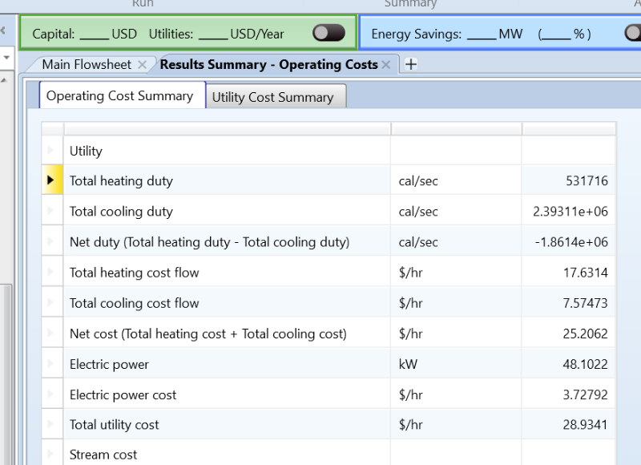
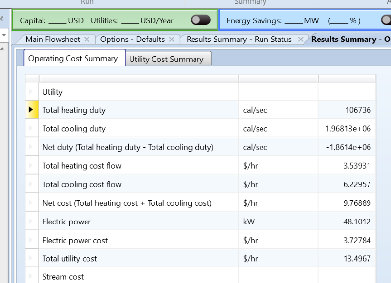
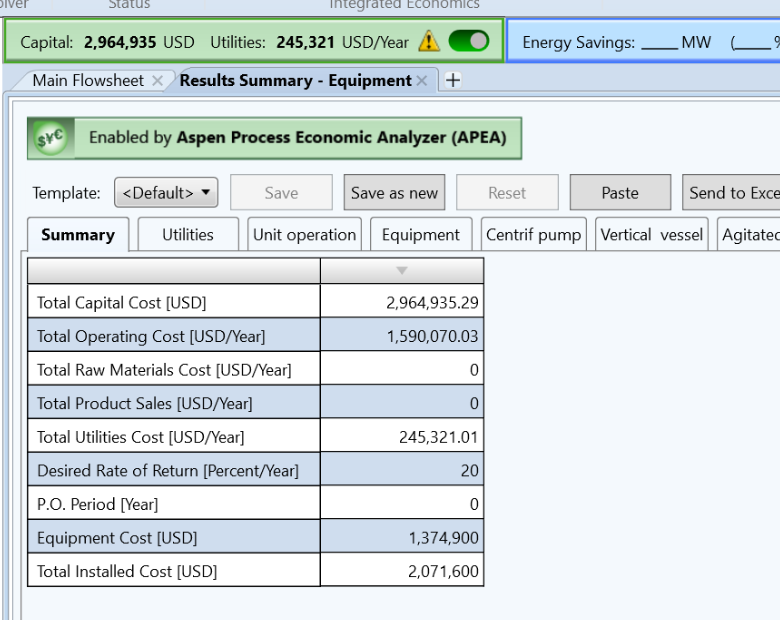

Build a working base case
Use the assignment's reactor specifications (400 °F and 99.90% benzene conversion) and solve the feed, separation, purge, and recycle loop.
I modeled benzene hydrogenation in Aspen Plus V15, then tested a heat-recovery change to see how much heating and cooling utility it could save.
Explore the results ↗Parthav Patel · University of Illinois Chicago · Fall 2026
reduction in total utility cost
Cyclohexane (C₆H₁₂) is a colorless, flammable liquid made of six carbon atoms joined in a ring. It is an important chemical building block, especially for materials used to make nylon.
One common way to make cyclohexane is to react benzene with hydrogen. I modeled that reaction and the equipment needed to cool the outlet, recover product, and recycle unreacted gas.
Used upstream of chemicals such as adipic acid and caprolactam, which are used to make nylon.
Used in selected chemical processing and laboratory applications because it is nonpolar.
A starting material for additional chemical transformations and products.
My goal was to understand how the equipment works as one connected process. I also wanted to see whether heat leaving the reactor could be reused instead of paying to heat and cool two streams separately.
Track where benzene, hydrogen, cyclohexane, and nonreacting gases travel.
Return useful hydrogen while removing a small purge so inerts do not build up.
Find how much heating, cooling, and pumping/compression the model requires.
Keep the same process targets, add heat recovery, and quantify the modeled cost difference.
Could the hot reactor outlet warm the incoming feed, reduce utility demand, and still allow the simulation to meet the same process targets?
Cyclohexane production by benzene hydrogenation.
I first worked with a base case that heats the reactor feed and then cools the hot reactor outlet. Once that model was running, I added HX-100 to transfer some of the outlet heat back into the incoming feed.
The Aspen flowsheet includes a pump, mixer, heater, reactor, two separators, a valve, purge, and recycle compressor. I used design specifications to keep the hydrogen-to-benzene ratio and the concentration of methane plus nitrogen near their targets.
Use the assignment's reactor specifications (400 °F and 99.90% benzene conversion) and solve the feed, separation, purge, and recycle loop.
Place HX-100 between the hot reactor outlet and the cooler feed stream. In the modified case, the cold outlet was set to 120 °C.
Run the updated model and compare heating, cooling, and electricity costs against the base case using the same utility prices.
I find it easiest to understand this process in four parts: prepare the feed, carry out the reaction, separate the product, and send usable gas back around. Here is what each Aspen block is doing.
The pump raises the pressure of the liquid benzene feed so it can enter the higher-pressure process equipment.
Why? Liquid must be pushed through the process at the required pressure.
Fresh benzene and hydrogen-containing gas join the recycled gas stream. The model controls the hydrogen-to-benzene feed ratio.
Why? The reactor needs enough hydrogen; recycle avoids throwing away all unreacted gas.
The charge heater supplies energy to the feed. In the optimized design, HX-100 first takes useful heat from the hot reactor outlet, so less external heating is needed.
Why? Reaction feed temperature matters, and recovered process heat can replace part of the purchased heating duty.
Benzene reacts with hydrogen: C₆H₆ + 3 H₂ → C₆H₁₂. The assignment models 99.90% benzene conversion using a specified reactor reaction.
Why? This is where the product is actually made; the specified conversion is a model input, not a yield independently predicted by kinetics.
The reactor outlet must be cooled before separation. In the modified design, HX-100 gives up some of that heat to the incoming feed, and the downstream cooler finishes the job.
Why? Cooling helps the mixture separate and reduces the amount of external cooling water required.
After cooling, the vessel separates a gas-rich stream from a liquid-rich stream under the modeled conditions.
Why? Unreacted hydrogen is more useful in a recycle gas stream than mixed into the liquid product path.
The valve lowers pressure, then the second separator removes additional flashed gas from the liquid-rich product stream.
Why? Pressure reduction and phase separation help prepare a cyclohexane-rich product stream for recovery.
Some separated gas is deliberately removed as purge. The remaining gas is recompressed and sent back toward the mixer.
Why? Recycle saves reusable hydrogen; purge stops methane and nitrogen from building up without limit.
A process simulation is a steady-state engineering model, not a claim that an industrial plant has been built. Actual equipment sizing, safety systems, kinetic behavior, product specifications, and capital economics need additional engineering verification.
The reactor sends out a hot stream that must be cooled. At the same time, the incoming feed needs heat. I tested whether these two needs could help each other before using more steam and cooling water.
This is a direct process-to-process heat match, modeled as HX-100 in Aspen Plus. It is not a claim of a completed plant-wide pinch optimization.
The hot reactor outlet and cooler feed pass on opposite sides of a solid wall. Heat crosses the wall, but the fluids do not mix. The outlet loses heat, the feed gains heat, and the external heater and cooler have less work to do.
I learned that an exchanger does not create energy. It simply moves energy from a stream that has too much heat to one that needs it.
I looked for a stream that needed cooling and one that needed heating. The reactor outlet and incoming feed were the logical pair to test.
Use the stream enthalpy change, flow rate, and available temperature difference to estimate transferable heat. The hot side must supply what the cold side receives.
I compared the original case with the HX-100 case while checking process targets, convergence, utility duties, and utility cost.
Heating duty decreased from 531,716 to 106,736 cal/s. The cooling duty decreased by the same amount.
One transfer reduces two purchased utility needs: less heat for the feed and less cooling for the outlet.
The corresponding total modeled utility cost fell by 53.35%; full figures and source screenshots are below.
Heat-duty calculation. For a stream without phase change and with roughly constant heat capacity, Q = ṁCpΔT. More generally, the process simulator uses the enthalpy change, Q = ṁΔh.
Temperature check. Hot fluid must remain hotter than cold fluid where heat transfers. Engineers choose a practical minimum approach temperature (ΔTmin) and check that the match is feasible.
Equipment sizing. After selecting a heat duty, estimate area with Q = UAΔTlm (with a correction factor where appropriate), then verify pressure drop, materials, fouling, controls, and capital cost.
When to use pinch analysis. For many hot and cold streams, identify stream temperatures and heat-capacity flow rates, shift hot and cold temperatures by ±ΔTmin/2, calculate interval heat balances, and cascade the heat to estimate minimum external utilities. A heat-exchanger network grid can then help plan matches above and below the pinch. I did not carry out that full network-wide calculation for this single-exchanger case study.
I compared the utility summaries from the base case and the modified simulation. The original Aspen screenshots are included below so the comparison can be checked.
| Metric | Base case | Heat recovery | Reduction |
|---|---|---|---|
| Heating duty | 531,716 cal/s | 106,736 cal/s | 424,980 cal/s |
| Cooling duty | 2,393,110 cal/s | 1,968,130 cal/s | 424,980 cal/s |
| Heating cost | $17.6314/h | $3.53931/h | $14.09209/h |
| Cooling cost | $7.57473/h | $6.22957/h | $1.34516/h |
| Electricity cost | $3.72792/h | $3.72784/h | Essentially unchanged |
| Total utility cost | $28.9341/h | $13.4967/h | 53.35% |
Price basis: 10-bar steam at $2.20/GJ; cooling water at $0.21/GJ (30–40 °C); electricity at $0.0775/kWh. Displayed values retain source precision; minor differences arise from rounding.


At the modeled utility rates, the difference is about $15.44 per operating hour. Move the slider to see how that adds up at different annual operating hours.
This is gross utility savings. It excludes the added exchanger's capital cost, maintenance, and financing.
Illustrative annual savings at the report's utility prices.
I also reviewed the base-case estimate from Aspen Process Economic Analyzer: $1,374,900 in equipment purchase cost, $2,071,600 in installed cost, and $2,964,935.29 in total capital cost. The reactor was excluded under the assignment instructions.
The 53.35% figure is a reduction in simulated utility cost, not a 53.35% reduction in the total cost of making cyclohexane. I have not yet calculated HX-100's installed cost or payback. Those would require exchanger sizing, a pressure-drop check, and a more complete cost estimate.

The interesting part was not just getting a final number. It was understanding what needed to work before I could trust the comparison.
The recycle loop took extra attention because the stream returning to the mixer affects the next pass through the process. In the modified case, I increased the maximum convergence iterations from 30 to 100 and checked that the design targets were still being met.
Hydrogen is useful to recycle, but methane and nitrogen cannot be allowed to accumulate. The purge and design specification helped keep their combined mole fraction near 0.08 while the hydrogen-to-benzene molar ratio stayed near 5.
Recovering 1.778 MW reduced both modeled heating and cooling demands. But a lower utility bill alone is not enough to prove the exchanger is worth installing. Sizing, pressure drop, and capital cost are the next checks I would make.
Chemical Engineering student
University of Illinois Chicago
I completed this academic case study for CHE 433 at UIC in Fall 2026. It gave me practice using Aspen Plus to connect material balances, recycle calculations, heat duties, and utility costs in one process.
Source: Parthav Patel, “Aspen Plus Simulation and Utility-Cost Reduction Report,” Homework Set #02, September 20, 2026. Aspen screenshots are retained from that report. ChatGPT supported model troubleshooting, calculation checks, and report preparation, as disclosed in the source report.